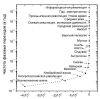

Страницы авторов "Тёмного леса"
Пишите нам! temnyjles@narod.ru
Viva Scientia. Ежегодник, 2014 (с.153-164)
Поколение живущих сегодня людей можно смело считать самым значительным из всех, что когда-либо жили на нашей планете.
Митио Каку` [2013, с.503]
Недавно в публичной дискуссии склонный к парадоксальным суждениям эрудит-"западник" доказывал, что Россия - чуть ли не пустоцвет на древе человечества. Он рассуждал примерно так: в Англии произошла промышленная революция, итальянцы открыли электричество и т.д. и т.п. "А чего не было бы в мире, если бы не было нашей страны?"
В аудитории преобладала нонконформистски настроенная молодёжь, и в ответ на риторический по интенции вопрос было неуместно рассказывать про Гагарина, Толстого и Айвазовского - на столь очевидные ходы в рукаве у оппонента наверняка имелись краплёные карты, так что спор грозил превратиться в досужую игру. Чтобы перехватить инициативу, требовалось что-то неожиданное, и, следуя сослагательной интриге вопроса, я ответил коротко: "Если бы не было России, не было бы двадцать первого века"...
Ответ дан не в полемическом задоре - это результат многолетних исследований, сосредоточенных в последнее время в Центре Мегаистории и системного прогнозирования Института востоковедения РАН [Назаретян 2014]. При углублённом изучении переломных вех истории и предыстории человечества обнаруживается, что в прошлом оно неоднократно находилось на грани гибели из-за накопившихся последствий собственной деятельности. Последний по времени глобальный кризис пришёлся на XX столетие, и полвека назад никто не мог гарантировать его благополучное завершение. Анализируя общественные настроения 1960-х годов, мы видим, насколько малы были шансы планетарной цивилизации дожить до XXI века. И насколько велика заслуга СССР в том, что человечеству всё же удалось выкарабкаться из-под военно-политических и экологических (связанных более всего прочего с массированными ядерными испытаниями) завалов середины прошлого века. В книге [Назаретян 2014] показано также, что Октябрьская революция, ставшая катастрофой для России, дала мощный импульс прогрессивным социальным преобразованиям в "цивилизованных" странах.
Вопреки распространённым убеждениям, новые глобальные угрозы отличны по содержанию от тех, которые удалось преодолеть в XX веке. Не обсуждая их здесь подробно, обратим внимание на одно из самых удивительных открытий начала XXI века. Во-первых, в социально-исторической, биологической и космической фазах универсальной эволюции прослеживаются сквозные векторы, так что совокупная сложность Вселенной последовательно возрастала. Во-вторых, серией независимых расчётов, проведённых учёными разных специальностей в Австралии, России и США, показано, что на протяжении 4.5 млрд. лет эволюция биосферы и общества ускорялась в соответствии с простой логарифмической формулой (которая, возможно, распространяется и на эпохи космической эволюции, непосредственно предшествовавшие образованию Земли и Солнечной системы). Ни космические и геологические катаклизмы, ни появление на Земле людей с их свободой воли и обильными безрассудствами не изменили эту преемственную тенденцию: временны`е периоды между глобальными катастрофами (с последующими качественными усложнениями био- и антропосферы) сокращались в убывающей геометрической прогрессии. При экстраполяции в будущее выяснилось, что около средины XXI века гиперболическая функция исчерпывается, т.е. кривая обращается в вертикаль, скорость эволюционных изменений устремляется к бесконечности, а интервалы между фазовыми переходами - к нулю (рис.1). В математике это называют сингулярностью, за которой должна наступить фаза бифуркации - смена миллиардолетних тенденций.
|  | Рис.1. Масштабная инвариантность распределения биосферных фазовых переходов во времени (по [Панов 2008]). |
Учёные и философы обсуждают, какая же предметная реальность скрывается за этим математическим выводом [Singularity... 2012]. По всей видимости, на горизонте грандиозный перелом в эволюции общества и природы на Земле, сопоставимый с появлением жизни. Согласно оценкам, полученным с использованием синергетических моделей и современных методов глобального прогнозирования, за этим могут последовать а) обвал планетарной антропосферы (простой аттрактор); б) временная стагнация на пике возможной сложности (горизонтальный странный аттрактор); в) прорыв в новую - космическую фазу эволюции (вертикальный странный аттрактор).
Принципиальная возможность третьего (прорывного) сценария теоретически показана в новейшей астрофизике и подтверждена моделями эвристики. В новейших естественнонаучных публикациях подробно аргументируется вывод о том, что сознание представляет собой "космологически фундаментальный факт" и перспектива развития Метагалактики определяется перспективой развития разума. Более того, имеются основания полагать, что эра спонтанного роста сложности Вселенной близится к завершению и, если дальнейшая эволюция в принципе возможна, то она может быть только сознательно управляемой. Но для этого требуется сознание, способное выдержать неограниченный рост инструментального потенциала: согласно закону техно-гуманитарного баланса, именно рассогласование технологических возможностей с качеством культурно-психологических регуляторов всегда провоцировало антропогенные кризисы, катастрофы, а во многих случаях - саморазрушение социальных организмов, подорвавших природные и геополитические основы своего существования.
Таким образом, сценарии развития Земной цивилизации за порогом прогнозирования упираются в вопрос о том, успеет ли сознание вырабатывать средства саморегуляции, соразмерные технологиям, развивающимся в режиме небывалого ускорения.
Стержневой глобальной проблемой XXI века становится дефицит смыслов. В стремлении заполнить смысловой вакуум люди обращаются к религиозным и квазирелигиозным идеологиям (конфессиональный, национальный и прочий фундаментализм), которые построены по ментальной матрице "они-мы", разделяя мир на своих и чужих, так что образ врага искони служил фактором групповой консолидации [Поршнев 2010]. Между тем мир вступил, по выражению американского программиста, в эпоху "знаний массового поражения" [Joy 2000]. С развитием науки новейшее оружие становится всё более дешёвым и доступным, выскальзывая из-под контроля государств и вменяемых правительств. Размывающиеся грани между боевыми, производственными и обиходными технологиями, а также между состояниями войны и мира, делают Землю как никогда хрупкой, зависимой от прихоти пассионарных вождей и отдельных технологически "продвинутых", но не обременённых грузом социальной ответственности провокаторов. При этих обстоятельствах условием сохранения планетарной цивилизации в XXI веке становится способность разума вырваться из оков макрогрупповой (конфессиональной, национальной, классовой и т.д.) идентичности и освоить стратегические смыслы, свободные от разобщающих идеологий.
Вот почему сегодня "национальные идеи" становятся эффективными в той мере, в какой они строятся не на патриотическом, но на космополитическом основании. А именно: что способна сделать та или иная страна для обеспечения жизнеспособности планетарной цивилизации в ближайшие десятилетия.
Россия в текущем столетии имеет шанс стать для мирового сообщества столь же важным сохраняющим фактором, каким она послужила в прошлом столетии. Такая настоятельная потребность обусловлена напряжениями текущего исторического этапа.
Победа в "Холодной войне" породила у западных лидеров эйфорию, чувство вседозволенности и безнаказанности, комплекс катастрофофилии, выражающийся иррациональным стремлением к "маленьким победоносным войнам". В 1990-х годах заметно снизился интеллектуальный уровень внешнеполитических решений. На смену своего рода гроссмейстерам, проводившим в 1970-80-х годах блестящие комбинации, нацеленные на сохранение стабильности даже самых одиозных режимов (дабы избежать коммунистического проникновения) и сложившегося международного порядка пришли игроки пятого разряда, не умеющие просчитывать последствия дальше одного хода. Импульсивные действия, за которыми глубокомысленные экономические и политические обозреватели склонны усматривать далеко идущие планы, в действительности раз за разом оборачиваются проигрышем для их инициаторов и расшатывают устойчивость мировой политической системы.
В 2003 году мне доводилось писать об этом в американской печати [Nazaretyan 2003], анализируя события в Югославии и Ираке, и с тех пор примеры драматически множатся. В самые последние годы провокации в Египте, Северной Африке, Сирии, Украине не только сопровождались множественными человеческими жертвами, но и приводили к явно контрпродуктивным эффектам. Эпигоны из США, поощрявшие агрессивную толпу на Тахрире в 2011 году, не ждали, что "победа демократии" приведёт к власти братьев-мусульман. Разжигая беспорядки на Майдане в конце 2013 года, американские политики и их европейские последователи едва ли стремились привести Украину на грань гражданской войны - они, как прежде, самоуверенно вмешались в события, не изучив страну и сложившуюся ситуацию...
Историко-психологический анализ показал, что подобная симптоматика ("предкризисный синдром"), спровоцированная рассогласованием между технологической мощью и качеством регуляторов, обычно предшествовала кризисам и катастрофам. В частности, специалист по истории позднего Рима Сюзан Маттерн провела прозрачную параллель между действиями современных американских политиков и действиями римских политиков в преддверье краха Империи [Mattern 1999]. Сегодня это чревато самоубийственными глобальными последствиями.
Вместе с тем крах биполярного мира вывел на поверхность террористические группы, пестовавшиеся оппозиционными военными блоками и затем одичавшие, как бездомные псы (экологи знают, что собачьи стаи, заняв нишу уничтоженных людьми волков, представляли ещё большую опасность). При небывалой доступности новейших средств разрушения неуправляемый конфликт между религиозными фанатиками и фетишистами западных форм демократии грозит обвалом планетарной цивилизации. В итоге дальнейшие исторические события будут развиваться в сторону "простого аттрактора", т.е. к разрушению антропо- и биосферы.
Сегодня многое в судьбе цивилизации может зависеть от того, найдётся ли своевременно надёжный стабилизатор, обеспечивающий становление по-настоящему многополярного мира. Таким стабилизирующим фактором имеет шанс стать сильная, трезвая и демократическая Россия, и использование этого исторического шанса могло бы составить мировоззренческую подоплёку новой "национальной идеи".
В российской культуре жива оригинальная традиция светского (т.е. не замешанного на религиозно-идеологических конфронтациях) планетарного мышления, представленная космической философией. Её провозвестник князь В.Ф. Одоевский изложил суть такого мышления наглядной схемой. "При всяком происшествии, - писал он, - будем спрашивать самих себя, на что оно может быть полезно, но в следующем порядке: 1-е, человечеству, 2-е, родине, 3-е, кругу друзей или семейству, 4-е, самим себе. Начинать эту прогрессию наизворот есть источник всех зол, которые окружают человека с колыбели" (цит. по [Медведев 1986, с.681]).
Выстроенная таким образом иерархия ценностных приоритетов сегодня впервые становится по-настоящему исторически востребованной, и Россия может сделаться её знаменосцем. Для этого, вместо заигрывания со средневековыми суевериями под предлогом "возвращения к истокам", следует ясно обозначить курс на укрепление технически мощного, независимого, прогрессивного и авторитетного государства. Воспитательная работа и политическая пропаганда должны апеллировать не к "патриотизму" и тем более не к "православию" (всё это безнадёжно тривиализирует современные задачи), а к миссии трезвого модератора в игре политических амбиций на международной арене. Только в таком - над-идеологическом - контексте российская внешняя политика способна стать по-настоящему перспективной и привлечь активных сторонников за рубежом, каковых во множестве имела советская политика в период расцвета интернациональной коммунистической идеологии.
Каку` М. Физика будущего. М.: Альпина нон-фикшн, 2013.
Медведев Ю. "На границе грядущего с беспредельным" // Русская фантастика XIX - начала XX веков. М.: Правда, 1986, с.680-692.
Назаретян А.П. Нелинейное будущее. Мегаистория, синергетика, культурная антропология и психология в глобальном прогнозировании. М.: Инфра-М, 2014
Панов А.Д. Универсальная эволюция и проблема поиска внеземного разума (SETI). М.: ЛКИ, 2008.
Поршнев Б.Ф. Контрсуггестия и история (Элементарное социально-психологическое явление и его трансформации в развитии человечества) // Историческая психология и социология истории, 2010, т.3, N2, с.185-219.
Joy B. Why the future doesn't need us? // Wired, 2000, April: 238-262.
Mattern S. Rome and the enemy. Imperial strategy in the Principate. Berkeley: Univ. of Caliph. Press, 1999.
Nazaretyan A.P. Power and wisdom: Toward a history of social behavior // Journal for the Theory of Social Behaviour, 2003, Vol.33, #4: 405-425.
Singularity hypotheses. A scientific and philosophical assessment. A.H. Eden et al. (eds.). Berlin Heidelberg: Springer-Verlag, 2012.
{kind=link}